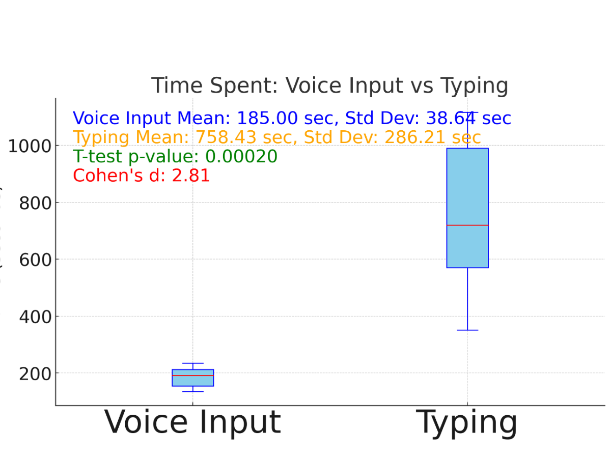

救急外来の記録時間80%削減｜音声入力カルテ コエレク


先生、こんな毎日を送っていませんか？
診察が終わっても、
カルテ記載で2時間残業
入院や紹介の申し送りに
記録が間に合わない
記録漏れで、
訴訟リスク増大
記録方法を、変えるだけで

診察後、PCと格闘
- ❌20分間、タイピング
- ❌会話を思い出して文章化
- ❌記録中は何もできない
コエレクなら

診察中、話すだけ
- ✅2分で記録完了
- ✅会話がそのまま記録に
- ✅手が空く、時間が増える
あなたの時間を、取り戻す。
 なら、記録が
なら、記録が

そこで得られる時間
月16時間 | 年192時間
これだけの時間が、あなたに戻ってきます
操作は、話す、選ぶ、かざす。
マニュアル不要。3ステップで、あなたの時間を取り戻す。
話す
スマホに話しかけるだけ。
選ぶ
AIが整えた記録を確認するだけ。
かざす
QRコードをリーダーにかざすだけ。
使い方は、1分で分かる。
マニュアル不要、一度使えば忘れない。
オンプレ電子カルテでも、安全にAIが使える理由
QRコード転送だから実現する、完全なセキュリティ

3省2ガイドライン完全準拠
厚生労働省、経済産業省、総務省が定める医療情報システムの安全管理に関するガイドラインに完全対応。
医療機関が安心して導入できるセキュリティ基準をクリアしています。
Microsoft Azure採用
世界最高水準のクラウドセキュリティで医療情報を保護。
大手医療機関も採用するエンタープライズグレードのセキュリティ基盤です。
24時間で自動消去
スマホ上の情報は24時間で自動的に消去される設計。
万が一の端末紛失時も、情報漏洩リスクはゼロ。医療情報を確実に守ります。
だから叶う、あなたの理想の未来
取り戻した時間が、あなたの夢を叶える
患者との対話シーン
温かいオレンジ～ベージュ系右上にスペース確保
もう少し、話を聞いてあげられる
記録ではなく、患者さんに向き合う時間
指導医と研修医
爽やかなブルー～グリーン系右上にスペース確保
じっくり、次世代を育てられる
教育に使える、確かな時間
論文執筆・研究
知的な紫～青系右上にスペース確保
あなたのキャリアが、動き出す
研究者としての、確かな一歩
記録ではなく、患者さんのために。
実際の救急外来で、どう使われているか。
札幌徳洲会病院 救急外来での実例をご覧ください。
札幌徳洲会病院 救急外来
「研修医でも迷わず使えて、救急外来での教育が格段にスムーズになりました。」
勤医協中央病院
「話すだけで記録できるので、患者さんとの対話を中断することがありません。」
函館五稜郭病院
「救命処置中も音声で記録できるので、緊急時の記録漏れがゼロになりました。」
賢い先生に選ばれる、3つの理由
なぜコエレクが、全国の先進的救急外来で導入されているのか
最もシンプルな操作
話す、選ぶ、かざす。たった3ステップ。
複雑な設定不要、マニュアル不要。
研修医でも初日から使いこなせます。
どの電子カルテでも使える
QRコード転送だから、電子カルテの種類を選びません。
既存システムへの影響ゼロ。
導入のハードルが極めて低い設計です。
救急医22年の現場経験から生まれた
開発者は現役の救急医。
「実際に使える」ことを最優先に設計。
現場の声を反映した、継続的なアップデート。
導入前の不安、すべて解消します
Q1: 医療用語はちゃんと認識されますか？
+はい、AIが自動で医療用語に変換します。
『STEMI』『トロポニン』『心筋梗塞』など、専門用語も正確に認識。
修正が必要なのは全体の10%以下。ほとんどの記録はそのまま使えます。
Q2: 電子カルテと連携できますか？
+はい、電子カルテを選びません。
QRコード転送方式なので、どの電子カルテシステムでもそのまま使用可能です。
システム改修は一切不要です。
Q3: 導入までどれくらいかかりますか？
+お試しから、すぐに導入可能です。
無料トライアル申込 → アカウント発行（即日） → その日から使用開始
複雑な設定は一切ありません。
Q4: スタッフへの教育は必要ですか？
+一度使えば、教育は不要です。
操作は『話す、選ぶ、かざす』の3つだけ。シンプルすぎて、忘れようがありません。
初回のみ簡単な使い方説明を行います。
Q5: オリジナルのプロンプトは使えますか？
+はい、あなたのカルテができるプロンプトサポート付きです。
診療科や施設に合わせたオリジナルプロンプトを設定可能。
『あなたのカルテ』をコエレクが実現します。
Q6: 月額料金はいくらですか？
+月額15,000円〜です。
施設規模や利用人数により詳細料金が異なります。
まずは30日間無料トライアルで効果を実感してください。
Q7: 無料トライアルはありますか？
+はい、30日間無料トライアル実施中です。
いつでも解約可能。導入リスクはゼロです。
まずは実際にお試しいただき、記録時間の短縮を体感してください。
記録に奪われた時間を、今日、取り戻す。
月16時間削減、年192時間。
英語論文1-2本分の時間が、あなたに戻ってきます。
この時間を、
患者さんに。
教育に。
研究に。
まずは30日間、無料でお試しください。
全国の先進的医療機関が選んだ、
最もシンプルな音声入力
救急医療の最前線で選ばれています